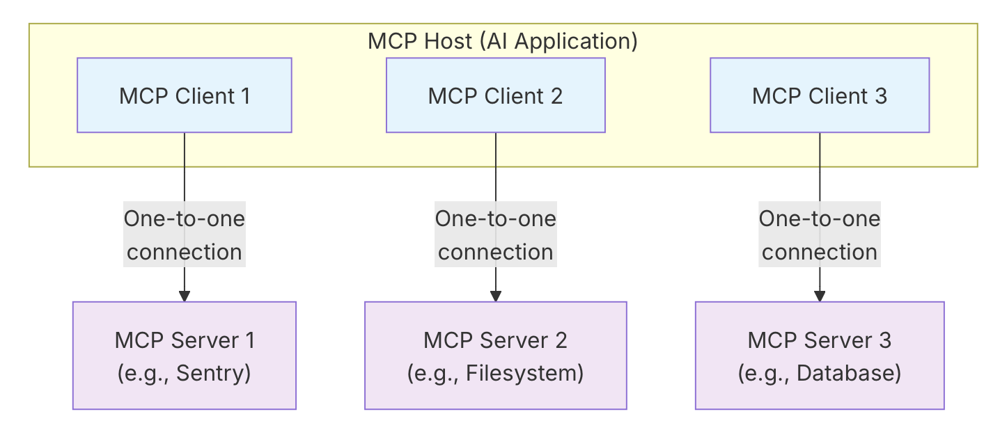

MCP 的 Host、Client 与 Server
正在读取本章记录下次复习：—
请通过“启动学习站.cmd”进入，才能写入数据库。

7.1 MCP Host
Host 是面向用户的 AI 应用或 Agent，例如 IDE、桌面助手、研究助手。它负责：
- 管理用户会话和模型；
- 创建、管理一个或多个 MCP Client；
- 聚合不同 Server 的能力；
- 决定哪些上下文进入模型；
- 执行授权、审批和安全策略；
- 把模型工具调用路由到对应 Client。
7.2 MCP Client
Client 是 Host 内部的协议组件。通常一个 Client 与一个 Server 维护专用会话。它负责：
- 建立传输连接；
- 初始化并协商版本与能力；
- 发送 JSON-RPC 请求；
- 接收响应、通知以及 Server 发起的请求；
- 将协议对象转换为 Host 可用的数据。
7.3 MCP Server
Server 是提供上下文能力的程序，可以运行在本机，也可以运行在远程平台。它可以封装：
- 文件系统；
- 数据库；
- SaaS API；
- 企业内部服务；
- 自动化脚本；
- 领域知识与提示模板。
“Server”描述的是协议角色，不等于“远程服务器”。一个通过 stdio 启动的本地子进程也是 MCP Server。
7.4 一对一连接不等于一对一部署
Host 通常为每个 Server 创建一个 Client 连接；但远程 Server 可以同时服务多个 Host/Client。不要把协议会话关系误解为服务器只能连接一个用户。